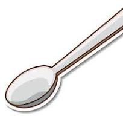
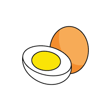
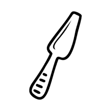
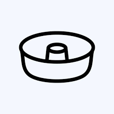
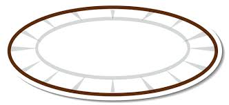

Sobre
Um bolo simples fofinho e quentinho com uma xícara de café pode ser tudo o que você precisa numa tarde chuvosa. E essa aqui é a receita que pode dar isso para você. Essa receita é bem simples e não leva muitos ingredientes. A massa branca pode ser usada com recheios de diferentes sabores e irá combinar com todos, já que não tem nenhum sabor dominante mais forte. Há quem diga que a massa branca é "sem graça", mas se você quiser, pode incrementar o bolo com alguma cobertura de brigadeiro, beijinho, leite condensado para dar mais sabor e deixar o bolo ainda mais molhadinho. Com bastante cuidado e pré-aquecendo o forno antes de colocar ele para assar, você consegue evitar que o bolo sole. Confira como fazer essa receita de bolo simples, também conhecido como bolo de farinha de trigo. Ele cai muito bem com um café quentinho!
Ingredientes
-
 2 xicaras (chá) de açucar
2 xicaras (chá) de açucar - 3 xícaras (chá) de farinha de trigo
-  4 colheres (sopa) de margarina
-  3 ovos
- 1 e 1/2 xícara (chá) de leite
- 1 colher (sopa) bem cheia de fermento em pó
Utensílios
-
 batedeira
batedeira - bowl
-  espátula para bolo
-  forma de bolo
- prato de sobremesa
Modo de preparo
modo de preparo: 40min
- Bata as claras em neve e reserve.
- Misture as gemas, a margarina e o açúcar até obter uma massa homogênea.
- Acrescente o leite e a farinha de trigo aos poucos, sem parar de bater.
- Por último, adicione as claras em neve e o fermento.
- Despeje a massa em uma forma grande de furo central untada e enfarinhada.
- Asse em forno médio 180 °C, preaquecido, por aproximadamente 40 minutos ou ao furar o bolo com um garfo, este saia limpo.